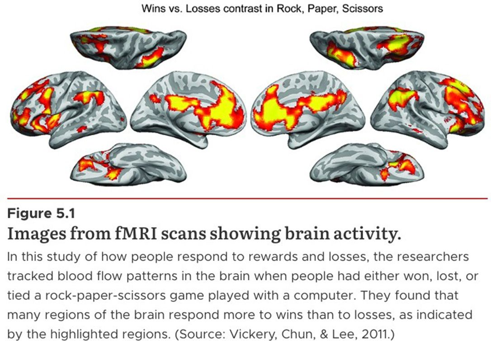
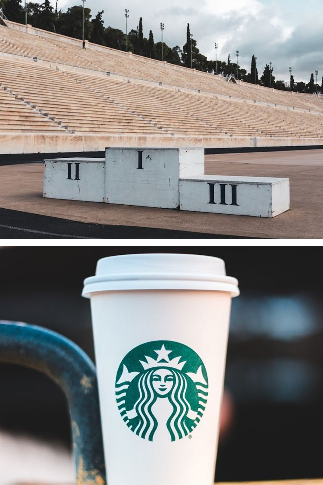
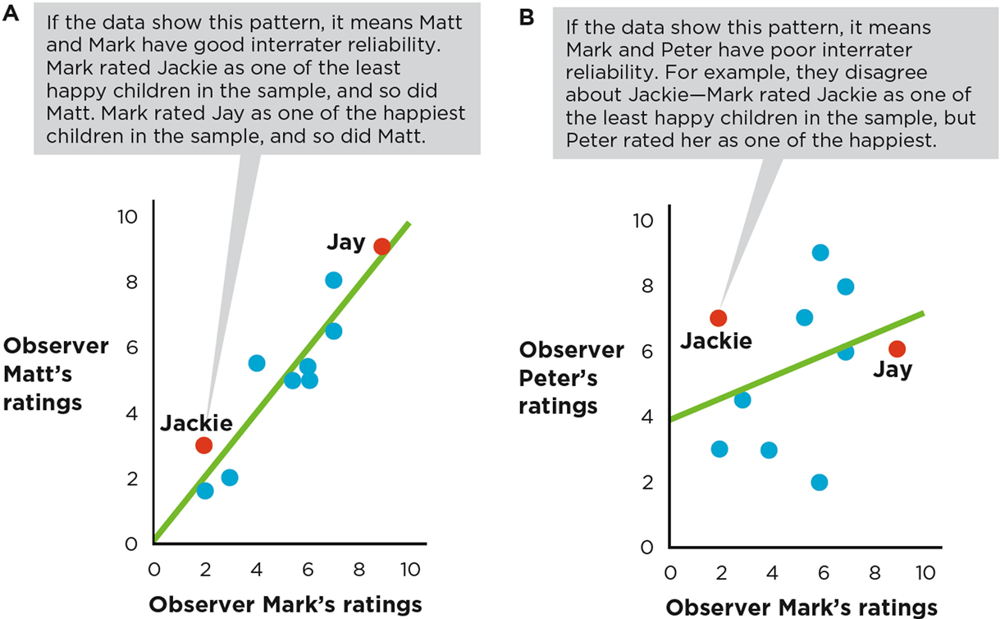
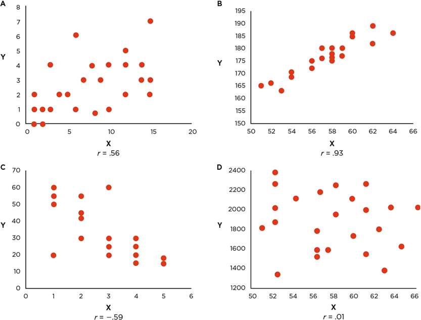

Dave Brocker
Any variable can be expressed in two ways: a conceptual definition (the abstract idea) and an operational definition (exactly how it’s measured).
Conceptual Definition of “Happiness”
A subjective sense of well-being and life satisfaction
Operational Definition of “Happiness”
e.g., a 7-point self-report scale, or the frequency of smiling observed over an hour
Every abstract construct in a study — stress, motivation, aggression — needs an operational definition before it can actually be measured.

Self-Report
Asking people to describe themselves
Observation
Watching and coding behavior
Physiological
Recording a bodily response
e.g., asking someone how many cups of coffee they drink per day.
How could you operationalize allergies, or cleanliness, by observing behavior rather than asking?
Categorical Variables
Groups with no inherent order
Quantitative Variables
Values that can be ordered or measured on a continuum
Species — Rhesus Monkey, Bonobo, Chimpanzee — is a nominal variable: categories with no meaningful order or distance between them.
Ordinal Scale
Ranked order, but unequal spacing
Interval Scale
Equal spacing, but no true zero
Ratio Scale
Equal spacing and a true zero

Coffee sizes — Short (8 fl oz), Tall, Grande, Venti — are ranked in order, but the size difference between each step isn’t consistent from one chain to the next.
Equal intervals between points, but 0 doesn’t mean “nothing.” (Think of a temperature scale — 0°F isn’t the absence of temperature.)
Equal intervals and a true zero that means “none of the thing exists” — which makes ratio statements meaningful (twice as much, half as much).
Nominal
Categories only — no order
Ordinal
Ranked, unequal spacing
Interval
Equal spacing, no true zero
Ratio
Equal spacing, true zero
Test-Retest Reliability
Consistency across time
Interrater Reliability
Consistency across raters
Internal Reliability
Consistency across items
Do people get consistent scores if the same measure is given at Time 1, Time 2, and Time 3?
Do two independent raters, coding the same event, arrive at consistent ratings?
Do people give consistent responses across every item on the same questionnaire — i.e., do the items “hang together”?

Higher interrater reliability shows up as dots clustered close to the diagonal line; lower reliability shows up as dots spread further from it.

Although a scatterplot is a good first step, the more common and efficient way to evaluate reliability is the correlation coefficient, ranging from -1 to +1.
Strength
The tighter the spread of dots in a scatterplot, the stronger the correlation — and the higher the reliability.
Good Test-Retest Reliability
r is strong and positive — .5 or above
Low Test-Retest Reliability
r is positive but weak
Good Interrater Reliability
r is positive and strong — .7 or higher
Terrible Interrater Reliability
r is negative
Internal reliability is typically evaluated with the average inter-item correlation — how consistently each item on a scale correlates with every other item.
When a published study reports “Cronbach’s α = .85” or “test-retest r = .72,” that’s the same logic covered here — just applied and reported in a real paper.